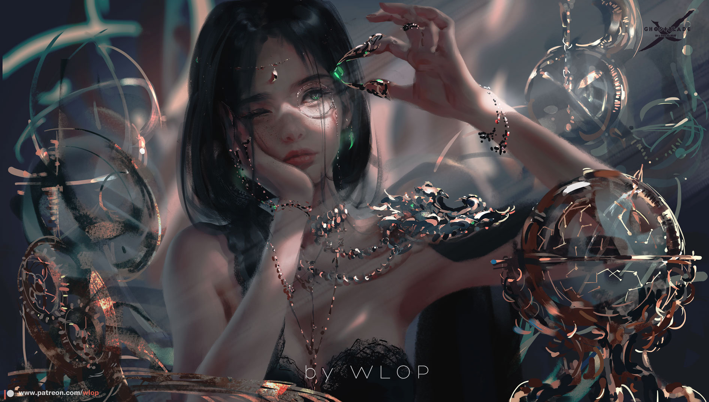
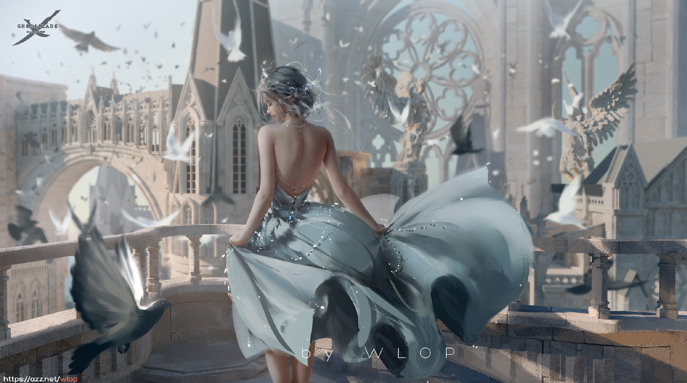
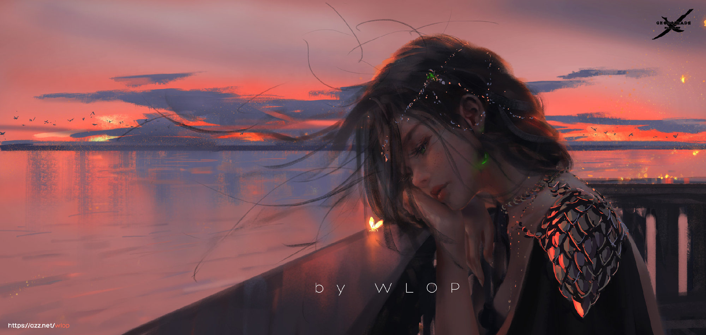

个人简介
王凌（WLOP），CG插画师，出生于江苏苏州，毕业于香港大学工学院.有两部漫画作品，《鬼刀》和《云虫》，连载在有妖气。
王凌在大学，学的是信息工程学，和艺术没一点关系。他在大学才开始自学数字艺术，没有一点绘画基础，花大量时间网上自学。
从起初作品被群嘲，到成为微博账号拥有300万粉丝的神仙画师，王凌逆袭的过程并不顺利。对于王凌来说，因为专业不对口，他也曾经受到了专业人士的无情嘲笑，大到画面的整体色调与氛围，小到画面物件和人物头发，以及服饰上的细节处理，无不被人于骨头里挑刺。不过他并没有当回事，而是坚持不懈的创作，形成了自己的画风，并最终将自己的爱好当成了事业。经过多年的努力之后，由王凌创作的《云虫》横空出世，彻底打破了大家对他的印象，浏览量突破百万。现在的他认为，不是科班出身，是自己的短板，也是自己的长处。没有那些所谓的“基础”的束缚，他反而可以有更多的空间去表达，并跟从自己的内心，将想象与艺术淋漓尽致地结合在一起。
在他人眼里，他是一个拥有着幻想和执念的疯子。可他坚信总有一天能够把自己想象中的东西表达出来。插画在他眼里，只是一种表达方式而已。Wolp说过：“我认为技法应该是服务于想法的，当我觉得一幅画已经可以完整的表达我的想法，我就停笔了。也许不完整但总是停留在最巅峰的时刻，留给人后半段的遐想” 。 所以我们看到wolp的作品的时候，总感觉是不完整的，仿佛留了空间给予人们想想…
对王凌来说，程序员是工作，而画画是兴趣，两者并不矛盾，正因为不靠画画吃饭，所以他才能更好的、没有顾忌的表达自己。王凌不是科班出身，但对于绘画的执着不输任何人，且他摸索出了独具一格的画风，这才是他最值得被称为大神的地方。

绘画风格
王凌的绘画作品，多以女性为主角，他十分擅长刻画，女性身上独有的那份，细腻坚韧，以及女性肢体美感。
王凌的画感，轻松自然，光影表现完美，虚实处理恰到好处。使得画面有着极强的，进深感与体量感。
而对于故事中的场景，王凌在构建时，则是极富想象力，大胆的设计中，满是他细腻的浪漫。
王凌的笔触，主要以厚涂为主，画风宏伟而细腻，质感通透，充满了史诗感，其中人物眼神的刻画尤其出众。
不得不说，王凌笔下的女性角色们，都令人无法抵抗，她们具备吸睛的美颜，又被赋予了独特的人格魅力。

代表作品《鬼刀》
《鬼刀》是国内原创绘本漫画，现连载于哔哩哔哩漫画、有妖气漫画，漫画以人类与羽族共同生活的诺拉大陆为故事舞台，讲述了诺拉大陆各方势力的恩怨纠葛。
主要剧情
故事开端，“血天使”奥斯丁想要“冰公主”海琴烟。海琴王不愿交出冰公主，奥斯丁下了最后通碟。
人们畏惧圣堂武士，冲入王宫，欲抢走冰公主，鬼刀通过“马斯”的指引，半路杀出，劫走冰公主海琴烟。
在贫民窟中，两人遇到恶霸强收保护费，要抢走一位交不起保护费的妇女的孩子，海琴烟希望鬼刀可以出手，但鬼刀拒绝了她。于是海琴烟将自己出生时就在身上的项链“冰蓝”给了恶霸。但夜晚海琴烟熟睡时，鬼刀将项链夺了回来，并杀光了恶霸。
海琴烟的守护骑士，“银白骑士”卡因，通过马斯找到了鬼刀和海琴烟，阻止海琴烟跟鬼刀走，而鬼刀则给了海琴烟两个选择:跟他走还是回去。
海琴烟选择了和鬼刀一起走。作为冰公主的守护骑士，卡因也一起前往，还有向往冒险的铁匠铺的小男孩马斯也加入了他们。 鬼刀一行在北漠接受挑战，卡因大显身手，云娜战胜漠公主风铃。北王天都出现，与鬼刀交手。 天都被鬼刀几招撩到，打斗期间破坏了场地，此时，洪都的坐骑——皎跑了出来。 海琴烟出现，安抚了皎。
……
